Journey 06 · Firenze Note 3 of 11 Field Note
The History of Florence Is Full of Women… If You Know Where to Look

The thing about Florence is that it can make you feel like you are seeing everything while still hiding entire histories in plain sight.
On the first evening of the Women Lead conference, Cristina Bibbiani took us into one of those hidden versions of the city. We had just come from wine and introductions: People were still learning names, programs, hometowns, and reasons for being there. For some, this was their first visit to Italy or Florence. Others, like me, had visited before and already had a mental map of what they expected of Florence. Then we stepped outside and were all given a new, unexpected map of the city and its history.
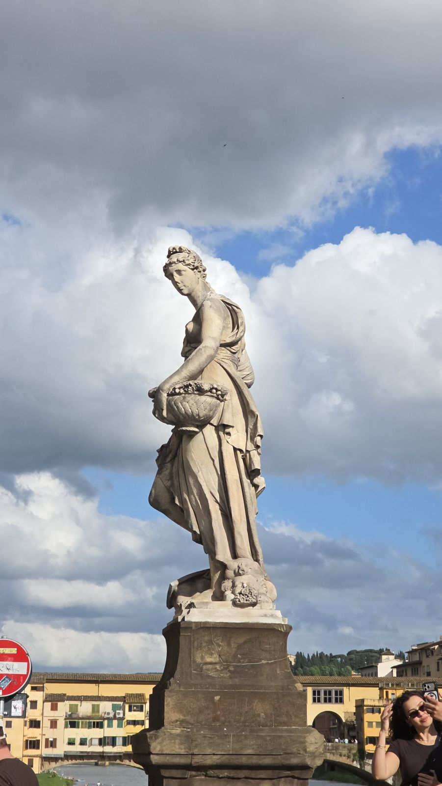
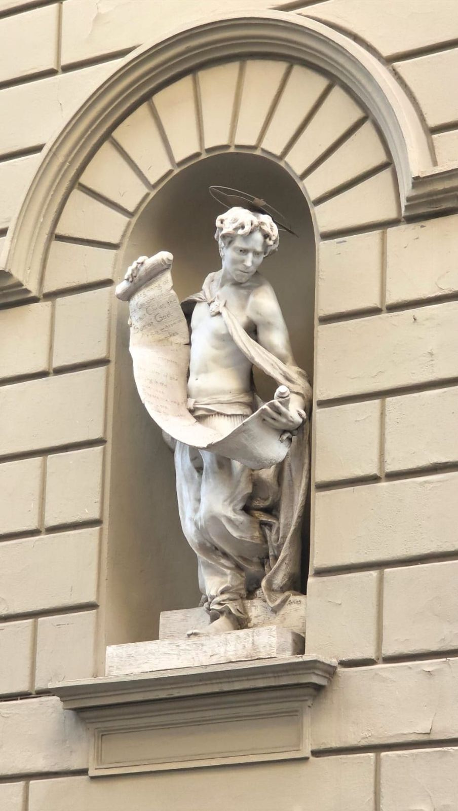
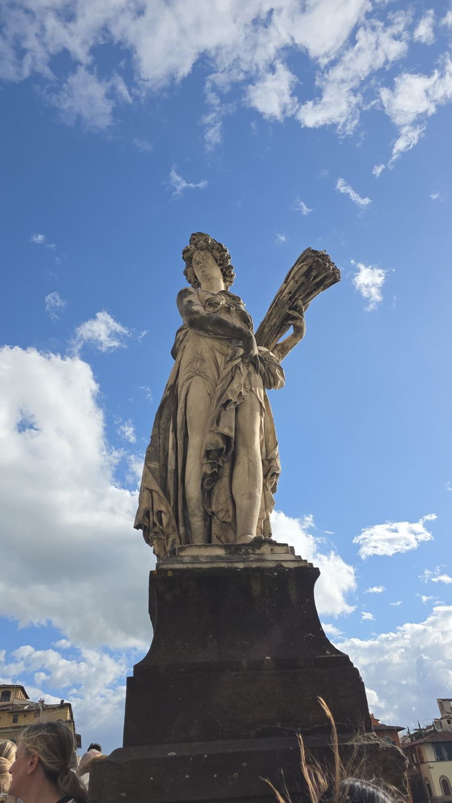
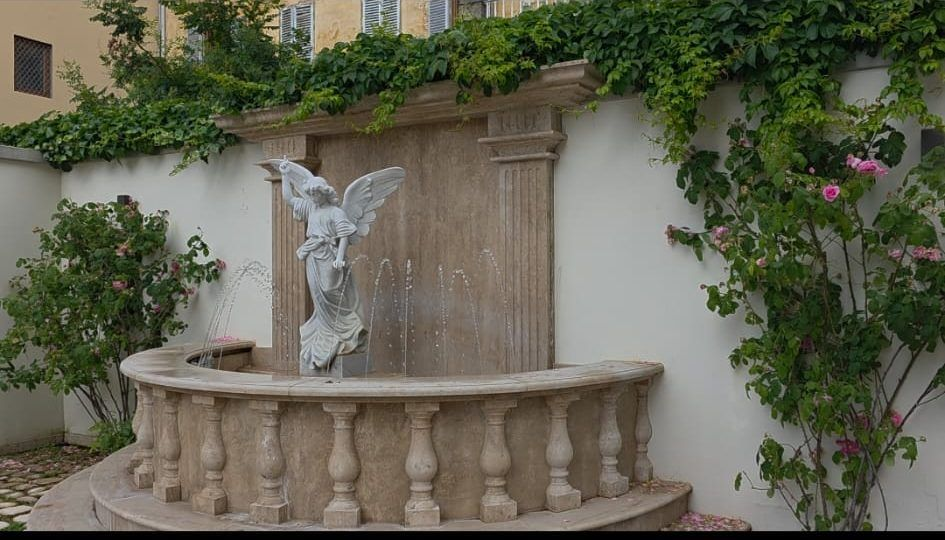
Cristina is an art historian, a linguist, and an official tour guide who has spent years working with study abroad students, immigrant communities, and anyone trying to understand Florence beyond the standard visitor’s map. She teaches how language and culture and history fit together and has contributed that knowledge in contexts ranging from American university programs to integration projects for refugees and immigrants. That background showed in the way she moved through the city that evening and brought history alive for us.
I have been to Florence a few times before, so I arrived with the confidence of someone who thought she knew at least a little about the city. But, I did not know what I did not know. The map Cristina drew for us was older and more complicated than the one most visitors ever see. What she gave us that evening was not the standard tourist intro to Florence – there was no shuffle from landmark to famous landmark. Instead, she taught us how to read the city differently, took us to the places where women had been and showed us how to find them.
She started with Plautilla Nelli, a nun, self-taught painter and the first known female artist of the Florentine Renaissance. Nelli entered the convent of Santa Caterina as a young girl, after her mother died and her father remarried. With Nelli, the convent, which no longer exists today, grew into something else: a flourishing workshop where she trained other sisters in professional painting techniques and produced sacred images that circulated through the city.
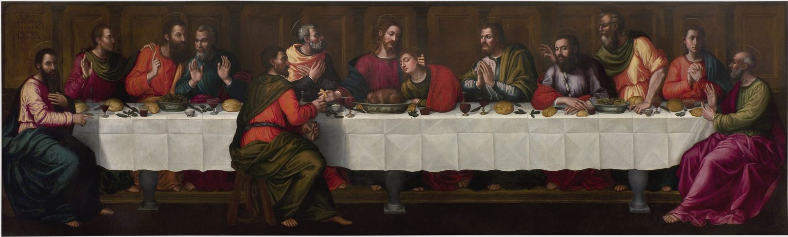
She became prioress running the operation. Vasari mentioned her briefly, but then history largely moved on without her. It wasn’t until centuries later that her work was to be rediscovered. Cristina described the restoration efforts that helped bring Nelli back into public view, including her stunning Last Supper, now in the Santa Maria Novella Museum, which is considered the largest Renaissance painting made by a woman.
She was there the whole time. It’s that nobody – including my own study abroad course in Florence – told us to look.
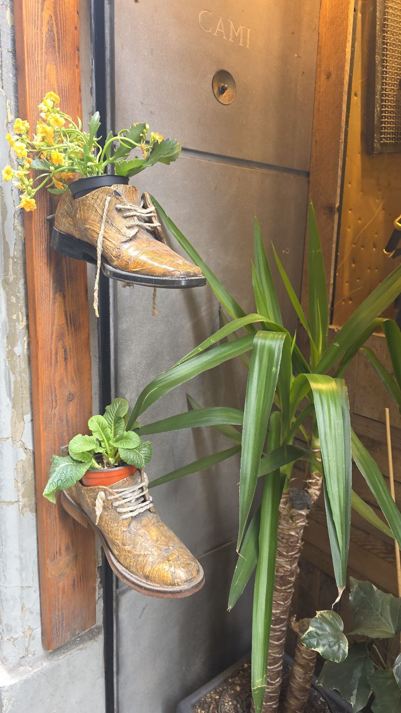
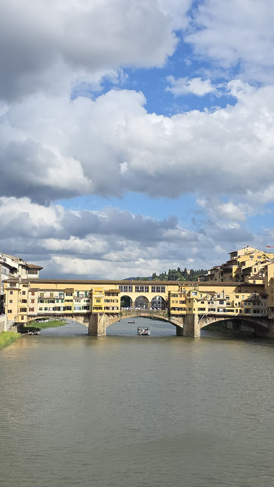
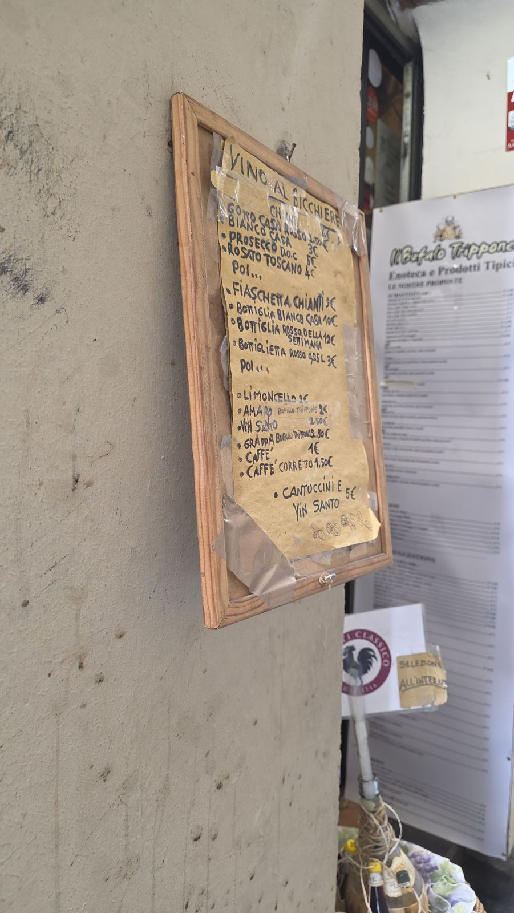
Then there was Mona Tessa. She was not a painter, nor a duchess, nor even a name I had heard before. She was a lay woman connected to Santa Maria Nuova Hospital and the Oblate community. Cristina described her as part of Florence’s long tradition of organized care, which immediately shifted how I was thinking about the city.
Unlike my very general understanding of catholic nun tradition, the Oblate women did not take cloistered vows. Instead, they served the sick while remaining active in the community. They helped create a model of care that reached beyond religious enclosure and into the life of the city.
But care leaves a different kind of evidence than conquest or architecture. It may not become a statue. It may survive as a hospital, a congregation, a habit of service, a civic identity, or a community that continues long after its founder is gone. It makes it easy for the work of history – or of today – to fade into the background as something we assume has always been and will always be, to the point that we overlook the hard work of the people – often women – who make it possible.
Florence, in the moment that Mona Tessa convinced Folco Portinari to finance the foundation of the hospital known today as Santa Maria Nuova, became more than a city of art, patronage, political ambition, and architectural genius. It also became a city held together by care work, much of it done by women whose names are footnotes, at best, in public memory.
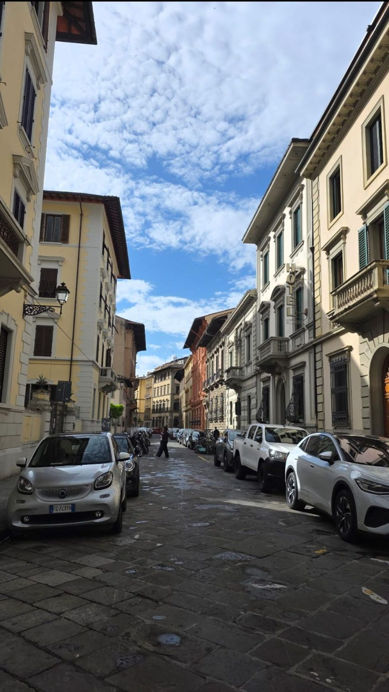
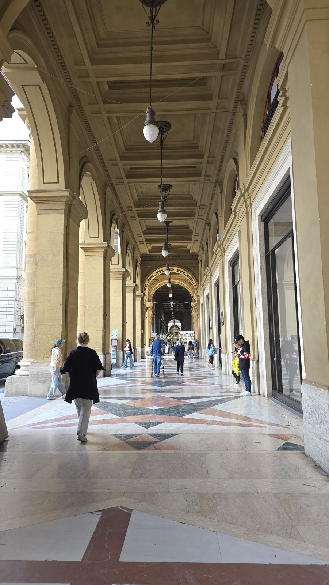
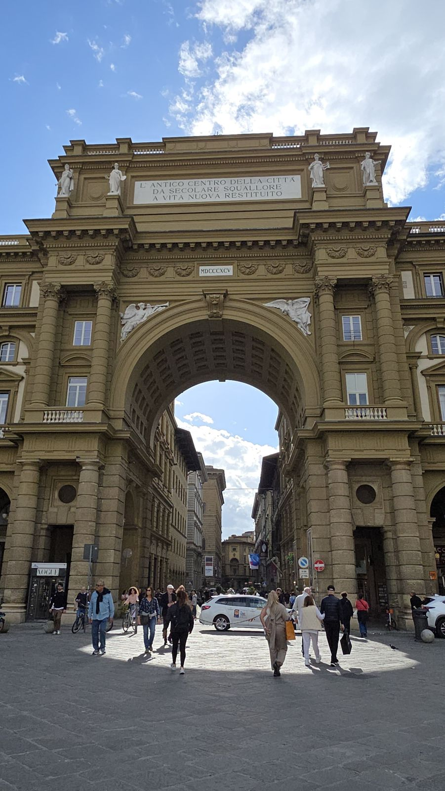
Somewhere along the uneven stone streets, we also heard about Fiorina Salvoni and the history of women’s education in Florence. By the end of the nineteenth century, women were entering universities, but still in small numbers, and still pushing against the pressure of systems not built with them in mind. Salvoni became the first woman to graduate in Florence, doing so in 1888 with her degree in Philology from the University of Florence.
Especially when compared to the lengthy history of Florence and Italy at large, 150 years does not feel like distant history. It is, in fact, recent enough to feel uncomfortably close.
As we neared the end of our tour of Florence, we were introduced to Eleonora of Toledo, Grand Duchess of Tuscany. I had seen her before as only one in a series of Medici family portraits: formal, iconic in heavily embroidered dresses, with the controlled expression of a woman who was, in truth, a matriarch of the Medici dynasty itself. Cristina gave us a fuller version of her.
Eleonora was intelligent, educated, strategic, and economically powerful. She managed property, strengthened the Medici household, and shaped the court through the structures available to her. In a time when women were seen as largely decorative and given little agency, Eleonora was a powerful woman. Her power did not look the same as her husband’s, but it was still very real. It shaped land, money, household politics, and the future of the Medici dynasty.
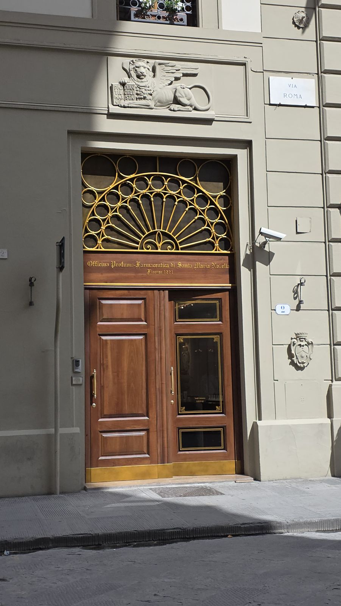
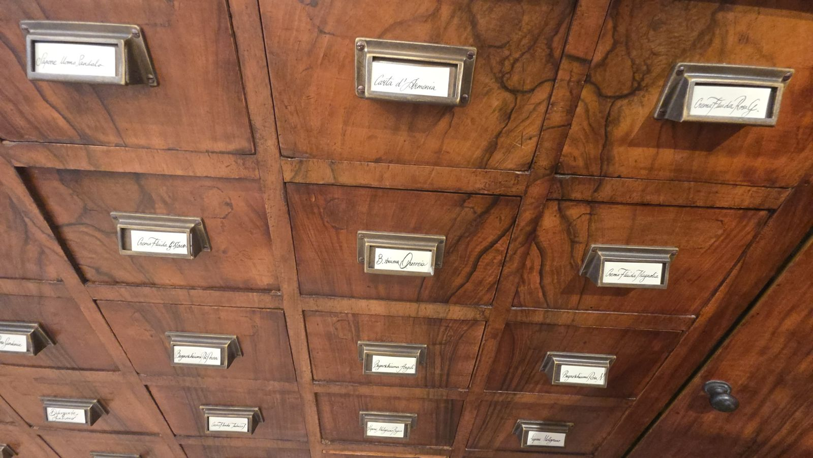
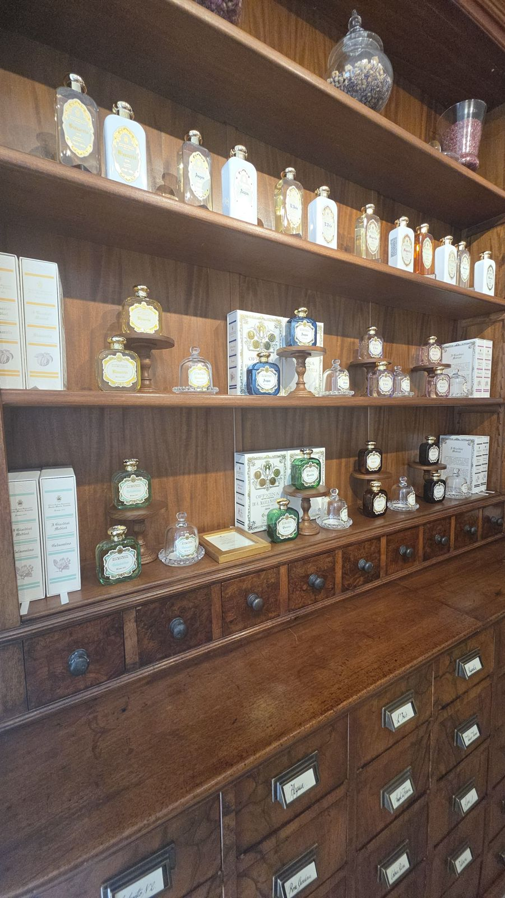
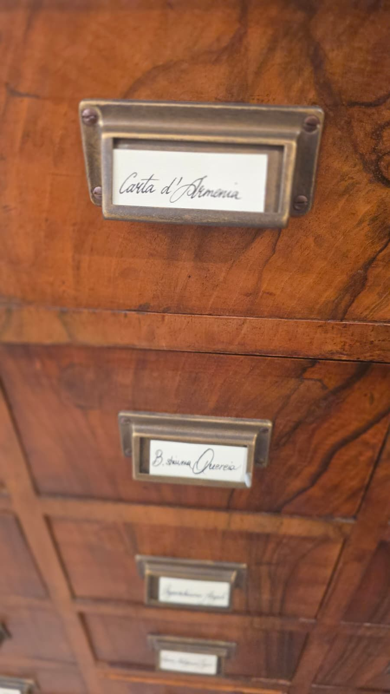
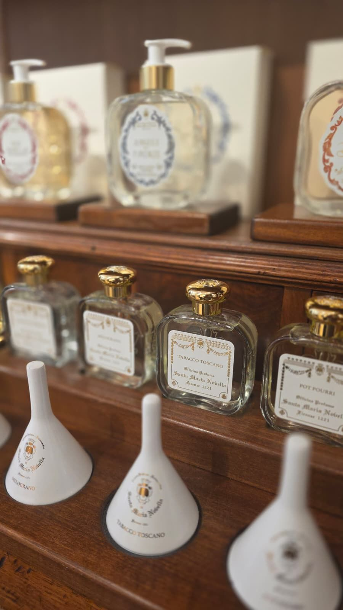
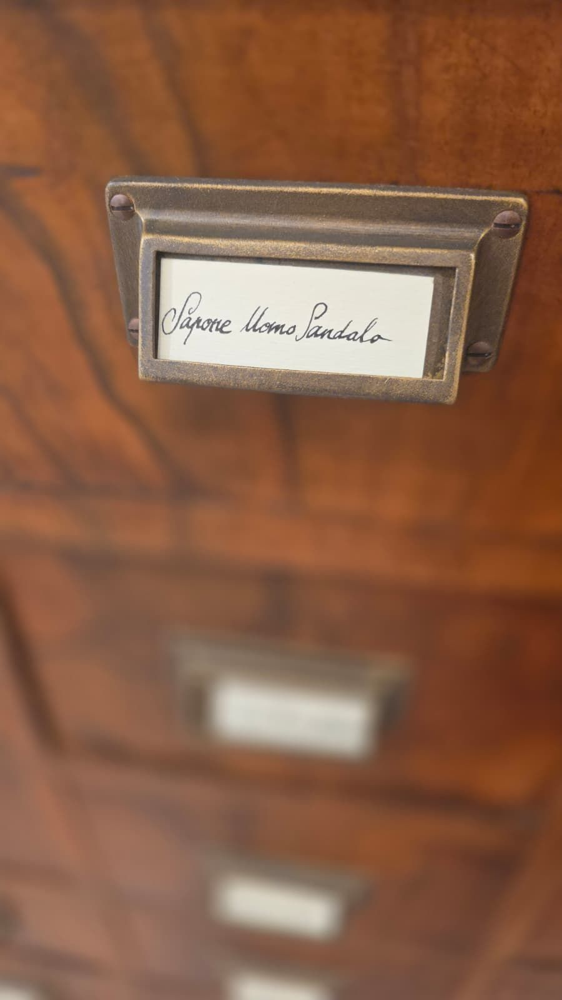
Among her many accomplishments, Eleonora was also known for establishing the art of perfumery in Florence, and her perfume shops can still be found in the city, complete with antique cataloguing drawers and the scent of her first perfume, created for her husband: Acqua della Regina
Finally, Cristina introduced us to Anna Maria Luisa de’ Medici, the last heiress of the Medici line. Anna Maria Luisa inherited everything and was permitted to rule nothing. Her brother held the title. The Holy Roman Emperor held the power. She was a princess with one of the greatest art collections in the world and limited political authority to protect it.
Working within those limits, she made the most powerful move available to her by creating the Patto di Famiglia, or the Family Pact.
Cristina explained the Family Pact as the lasting, legal act that stipulates that the Medici collections should remain in Florence, available to the city’s inhabitants and future visitors. The paintings, sculptures, objects, and inheritance of the family were not to be scattered, sold off, or removed from the city. It is still legally valid today.
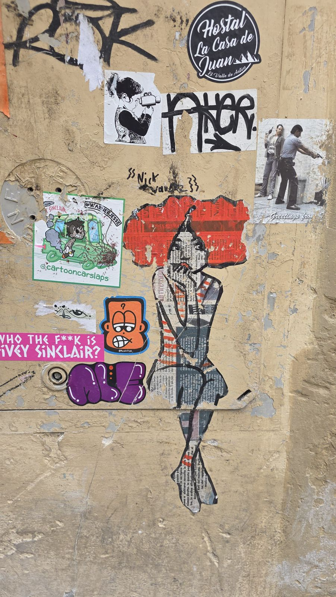
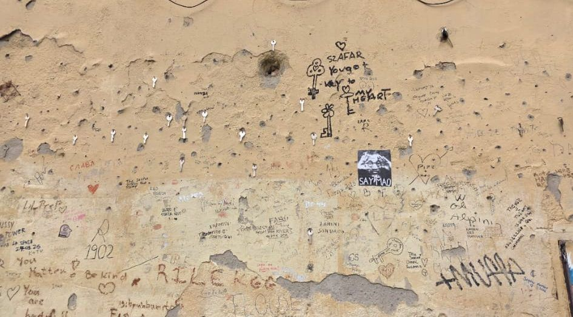
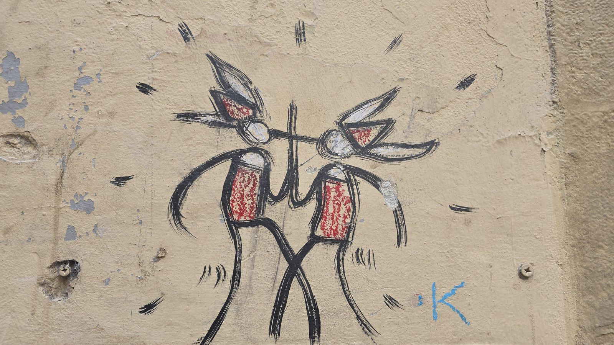
She could not rule Florence, but she could shape what Florence was able to keep, and therefore what Florence was able to become. So much of the Florence that people travel across the world to see, the collections, the museums and galleries, the libraries, the music, the architecture, the sense of the city itself as an open-air museum, bears the imprint of Medici patronage. Her legacy was not conquest or expansion: it was preservation. She protected something irreplaceable from being absorbed elsewhere.
The evening ended where Florence always seems to end up, in the present moment, which turns out to be continuous with everything before it. Cristina brought us forward through time, to Sara Funaro, the first female mayor of Florence, elected in 2024. To Giorgia Meloni, the first female Prime Minister of Italy. To Ursula von der Leyen, President of the European Commission.
As we walked through the streets, the stories of these women seemed to point out things in plain sight, asking whether we had noticed them before.
I certainly had not. Or maybe I had noticed the building, the street, the institution, and had never thought to ask who made it possible, or why her name was missing from the door. The line from Mona Tessa to Sara Funaro is not straight. It is interrupted, contested, frequently erased, and stubbornly persistent.
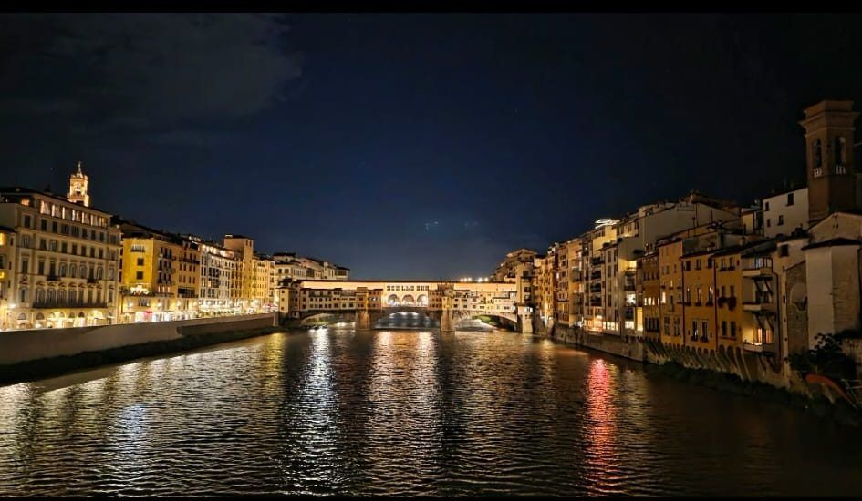
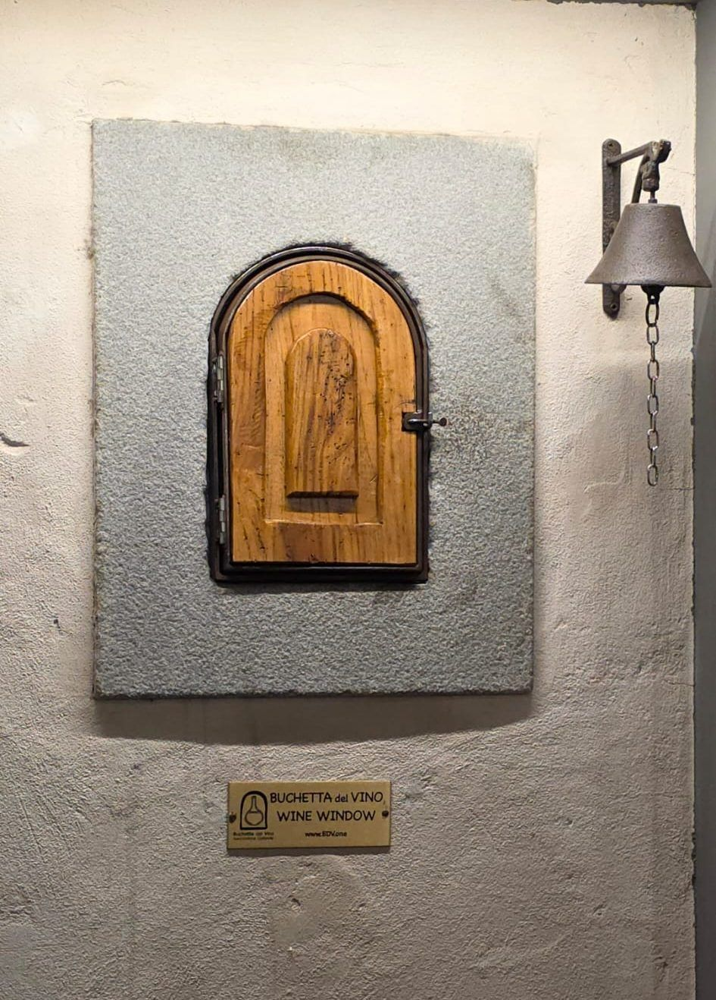
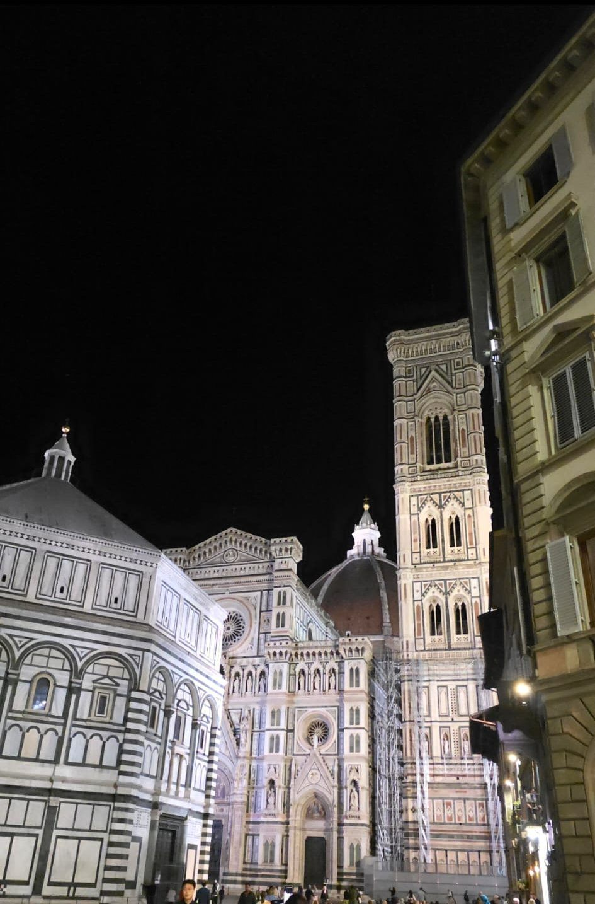
This is what the evening taught me: Women’s history was not absent from Florence. It was embedded in places I had not been taught to read: convents, hospitals, courts, legal documents, collections, schools, family structures, and civic institutions. It requires someone willing to point at the building and say: a woman made this possible. Cristina Bibbiani knows where to look, and now I know how to notice differently.
As I walked back to my hostel that night, gelato in hand after a lingering Italian dinner, I kept thinking about all the cities I have moved through without knowing what map I was missing.
The historical information in this post draws primarily from the tour and materials prepared by Professor Cristina Bibbiani, M.A., official tour guide and art historian at Gonzaga University in Florence. Any errors in interpretation are my own.
Mentioned in
Originally published at fieldnotesfromabroad.com/2026/05/18/the-history-of-florence-is-full-of-women/